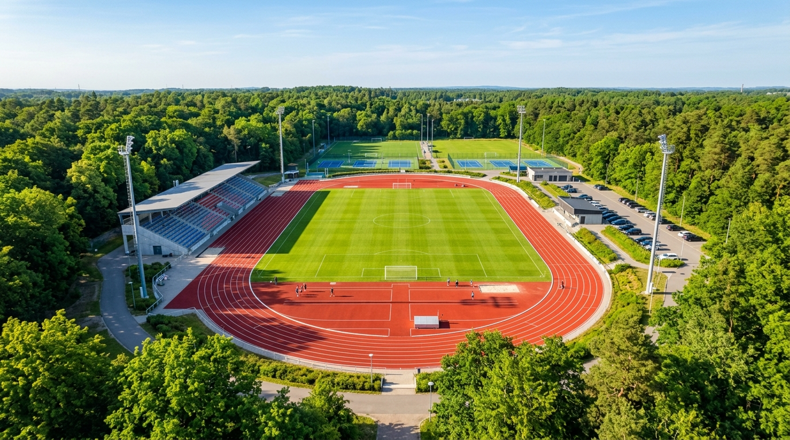

Le Nostre Sedi Operative e i Centri Sportivi
La nostra società svolge le proprie attività sui territori di Senago, Solaro e, temporaneamente, Limbiate, sfruttando sia gli impianti sportivi dedicati sia la straordinaria rete di percorsi naturalistici all'interno del Parco delle Groane.

In Arrivo il Nuovo Polo d'Eccellenza per l'Atletica a Senago
Grazie alla sensibilità, all'impegno e alla visione dell'Amministrazione e della Politica cittadina di Senago, il Centro Sportivo Comunale di Via Giovanni di Vittorio è protagonista di una storica opera di riqualificazione: è in fase di realizzazione una nuovissima pista di atletica a sei corsie di colore blu, attrezzata con pedane all'avanguardia per tutte le discipline di salti e lanci.
Questo investimento doterà la città e l'intero territorio di un vero e proprio polo sportivo d'eccellenza, pronto ad accogliere atleti, famiglie, scuole ed eventi agonistici in un impianto moderno, inclusivo e sicuro. Durante l'esecuzione dei lavori, i corsi di atletica e le sessioni su pista si concentrano temporaneamente presso gli impianti comunali di Solaro e Limbiate, in attesa di inaugurare la nuova casa dell'atletica senaghese.
Calcola Percorso
Clicca sui pulsanti sottostanti per aprire le indicazioni stradali direttamente sul navigatore di Google Maps:
Centro Sportivo Comunale di Senago
Via Giovanni di Vittorio, 2 - 20030 Senago (MI)
Centro Sportivo Comunale di Solaro
Corso Berlinguer, 2 - 20020 Solaro (MI)
Centro Sportivo Comunale di Limbiate
Via Leone Tolstoi, 84 - 20812 Limbiate (MB)
Dotazioni e Discipline per Impianto
Senago (In Riqualificazione)
Via Giovanni di Vittorio, 2 - 20030 Senago (MI)
- • Futura pista: Nuovissimo anello a 6 corsie blu e pedane salti/lanci
- • Discipline previste: Polo agonistico, gare provinciali/regionali, avviamento
- • Servizi: Spogliatoi dedicati, tribuna spettatori e ampio parcheggio
- • Stato attuale: Lavori in corso; corsi temporaneamente a Solaro e Limbiate
Solaro (Polo Corsi & Master)
Corso Berlinguer, 2 - 20020 Solaro (MI)
- • Impianto: Pista di atletica leggera con rettilineo e curve regolamentari
- • Corsi ospitati: Esordienti (Mar/Gio), Ragazzi/Cadetti (Mar/Gio), Master (Lun/Mer), Triathlon e Running School
- • Plus geografico: Accesso diretto agli itinerari podistici del Parco delle Groane
- • Servizi: Spogliatoi riscaldati con docce, parcheggio gratuito fronte ingresso
Limbiate (Polo Giovanile & Agonistico)
Via Leone Tolstoi, 84 - 20812 Limbiate (MB)
- • Impianto: Pista di atletica leggera completa e attrezzata
- • Corsi ospitati: Gioco-Atletica 2019-2021, Esordienti, Ragazzi e Cadetti 3 gg/sett, Settore Assoluti e Mamme che Sport!
- • Posizione: Baricentrico per Limbiate, Senago, Cesate, Varedo e Paderno Dugnano
- • Servizi: Spogliatoi atleti, illuminazione serale per allenamenti invernali
Il Nostro Bacino Territoriale: Al Centro delle Groane tra Milano e Brianza
Grazie alla collocazione strategica dei nostri impianti sportivi, Virtus Groane ASD è il punto di riferimento sportivo per le famiglie e gli appassionati di corsa e atletica residenti in tutti i comuni limitrofi nel raggio di 5-15 minuti:
📍 Asse Città Metropolitana di Milano
Comuni serviti direttamente a brevissima distanza:
Senago, Solaro, Cesate, Garbagnate Milanese, Bollate, Paderno Dugnano. Moltissimi nostri iscritti provengono dalle scuole primarie e secondarie di questi comuni grazie alla vicinanza e ai comodi collegamenti viari.
📍 Asse Provincia di Monza e della Brianza
Comuni della Brianza Ovest collegati alle nostre piste:
Limbiate, Varedo, Bovisio Masciago, Ceriano Laghetto, Cogliate, Lazzate, Misinto, Lentate sul Seveso. La continuità con la SP9, la SP44 e la rete ciclabile rende il raggiungimento dei campi agevole e rapido.
🌲 Gli Allenamenti Outdoor nel Parco Naturale delle Groane
Oltre all'attività tecnica e alle gare su pista, il nostro territorio offre una risorsa inestimabile: la rete di percorsi sterrati, piste ciclopedonali e brughiere all'interno del Parco Regionale delle Groane.
Questo ambiente naturale protetto è il teatro ideale per le sessioni domenicali della nostra Running School, per le lunghe sessioni di camminata con i bastoncini del Nordic Walking e per la frazione podistica e ciclistica della nostra sezione Triathlon. Unire lo sport all'aria pura e al verde è parte fondamentale dell'identità Virtus Groane ASD.